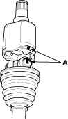
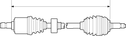
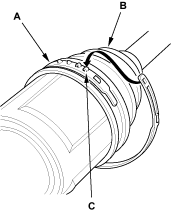
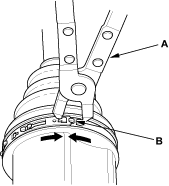

- Fit the inboard joint onto the driveshaft and note these items:
- Reinstall the inboard joint onto the driveshaft by aligning the marks (A) on the inboard joint and the rollers.
- Hold the driveshaft so the inboard joint points up to prevent it from falling off.

- Adjust the length of the driveshafts to the figure below, then adjust the boots to halfway between full compression and full extension. Make sure the ends of the boots seat in the grooves of the driveshaft and joint.
Left driveshaft:
495.2 - 500.2 mm (19.50 - 19.69 in.)
Right driveshaft:
790.2 - 795.2 mm (31.11 - 31.31 in.)

- Set the new low profile band (A) onto the boot (B) and dynamic damper, then hook the tab (C) of the band.
NOTE: When replacing the inboard boot and band, install the low profile band.

- Close the hook portion of the band, with commercially available boot band pincers (A), then hook the tabs (B) of the band.
